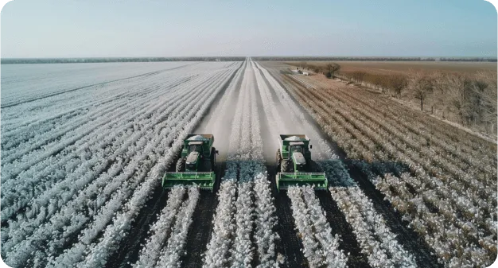
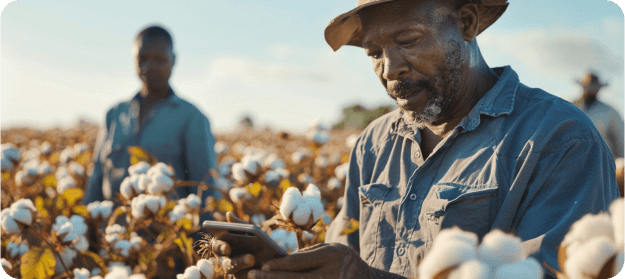

PROCESS
Precise tracking from start to finish
Identification of agents and assets
Instill confidence and security for all parties involved.
Registration of georeferenced plots associated with farmers holding exploitation rights.
Registration of farmers with identification, location, and contact information.
Registration of suppliers with identification, location, and contact information.
Crop planning and scheduling
Improve decision-making and mitigate operational risks.
Planning agricultural campaigns based on analysis of climatic data, soil conditions, historical yield data, and market demand.
Use of crop data and harvest volume for plantation scheduling.
Field mapping and zone management according to specific needs.
Geolocation to optimize irrigation and plantation zoning
Production control and management
Maximize your efficiency and quality in agrobusiness production.
Crop monitoring using drones and/or satellites for real-time anomaly detection and diagnostics.
Real-time virtual technical assistance through AI..
Integration of weighing and yield data to detect discrepancies and potential issues.
Digitization of laboratory tests to provide quality information and enhance decision-making.
Real-time capture of ginning processes.
Logistics and storage
Optimize agricultural order and delivery management.
Real-time traceability from the field to the warehouse using RFID or QR codes.
Digitalized warehouse management, optimizing space and streamlining processes.
Automatic reorder points to maintain business continuity without interruptions.
Monitoring of humidity using sensors in the warehouse.
Direct and transparent sales
Avoid intermediaries and facilitate business relationships.
Direct market access, enhancing communication between farmers and buyers.
Integration of e-commerce to facilitate marketing and the ability to trade freely.
Integration with financial services, enabling access to credits or loans.
Mechanisms for dispute resolution and management.
BENEFITS
A unique opportunity
Boosts your productivity and profitability
Pioneers in a developing market
Investing in Almaagro means spearheading growth in a sector with substantial potential returns, driven by its emerging market and abundant agricultural opportunities
Sustainable agriculture
Almaagro is positioned to meet emerging needs and capture significant market share through profitable investment.

Fusion of tradition and cutting-edge technology
Combining tradition with advanced technology, the platform integrates cutting-edge Agriculture 4.0 tools, such as AI, with the unique context of the farmer.

A profitable investment
Almaagro drives sustainable development by enabling the transition to more efficient agricultural practices through digitalization.
FEATURES
An innovative solution
Sustainable investmet with technology tailored for efficient and sustainable agriculture.


Flexibility and scalability
It adapts to the evolving needs of the agricultural sector.

Integration and customization
The use of APIs facilitates integration with other applications and services

Easy and barrier-free access
It combines AI with USSD technology, for connectivity in data-disconnected areas.
Modular design
It facilitates continuous integration of innovations and improvements.
Advanced analysis
It optimizes the cultivation process from start to finish.
ABOUT US
Almaagro is a product developed by SATEC, a Spanish company with over 35 years of experience helping clients from around the world optimize their business models.


Our technology integration projects prioritize innovation, productivity, safety, and efficiency. We tailor our solutions to each client’s specific needs, consistently employing the most innovative technologies available.
Contact us today and join the Agriculture 4.0 revolution

hello@almaagro.tech
Address
Av. de Europa, 34, Madrid